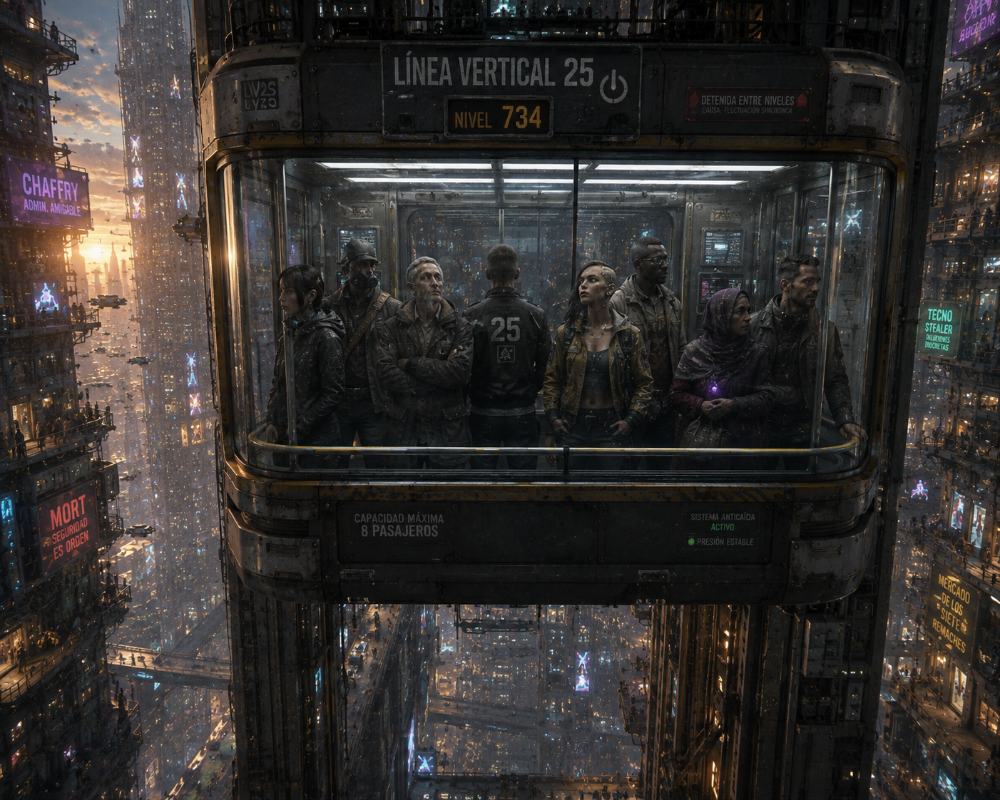
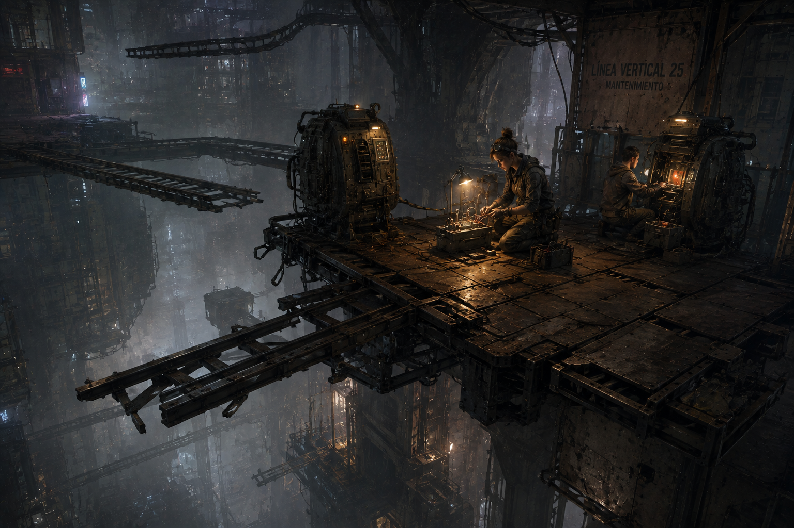

MÓDULO — El ascensor de los trece minutos
Colección de one-shots de MadCity — episodio 3 de 6. Estado: BORRADOR, pendiente de playtest.
«Todas las líneas llegan a destino. La tarifa por regresar se calcula aparte.»

Nivel 734. Detenida entre niveles. Para los de dentro, ya han pasado horas.
Resumen operativo — léelo antes de dirigir
Premisa: una cabina de la Línea Vertical 25 desaparece de los registros durante trece minutos y reaparece con ocho pasajeros — uno de ellos no es de los que subieron. Para los que estaban dentro, no pasaron trece minutos: pasaron varias horas. La cabina fue desviada, por una reparación barata e incompatible, a un antiguo bucle de servicio conectado a infraestructura de tránsito que ya no figura en ningún plano público. Un pasajero bajó a buscar ayuda y sigue allí. La cabina volverá a entrar en el bucle cuando complete su siguiente ciclo — y esta vez, quien esté dentro puede no salir en trece minutos.
Duración: una sesión de 4-6 horas. Todo el módulo ocurre en un radio muy pequeño: una cabina, una estación, y una plataforma aislada al otro lado del bucle. Deliberadamente cerrado — nada de plazas ni persecuciones abiertas.
Qué saben los PJ: que una cabina de la Línea 25 ha reaparecido tarde, que los pasajeros cuentan historias que no encajan entre sí, y que hay una persona de más a bordo que nadie recuerda haber visto subir.
Verdad del Narrador: no hubo viaje en el tiempo ni salida del universo. Fue una geometría de tránsito obsoleta, reactivada por accidente. Nada de esto tiene relación con Proctor ni debe insinuarlo.
Objetivo inmediato: encontrar al pasajero desaparecido y decidir qué hacer con la Línea 25 antes de que la cabina complete su siguiente ciclo y vuelva a entrar en el bucle.
Pregunta de fondo: ¿cuánto vale mantener abierta una ruta que ya ha demostrado que puede tragarse a alguien?
Si nadie interviene: la cabina completa su ciclo y vuelve a entrar en el bucle con quien esté dentro en ese momento. Sira cierra la línea por precaución en cuanto lo confirma — la ciudad pierde acceso a varios niveles durante horas, y el pasajero desaparecido sigue sin ser encontrado.
Desarrollo en cinco escenas
- Trece minutos tarde — reaparición, pasajeros, contradicciones y urgencia pública.
- Ocho relatos del mismo trayecto — reconstruir lo ocurrido y detectar la reparación incompatible.
- Billete al nivel que no existe — entrar en el siguiente ciclo o acceder por mantenimiento.
- La plataforma olvidada — localizar al desaparecido y comprender a la persona adicional.
- Mantener abierta la ciudad — decidir el futuro de la Línea 25.
Panel del Narrador — léelo antes de sentarte a la mesa
Reloj — noventa minutos hasta el siguiente ciclo completo:
| Tiempo | Qué ocurre |
|---|---|
| H+0:00 | La cabina reaparece. Escena 1 empieza aquí. |
| H+0:20 | Sira Venn llega a la estación, ya presionando por respuestas rápidas. |
| H+0:45 | Los técnicos confirman que la reparación incompatible sigue activa — la cabina completará otro ciclo si nadie interviene. |
| H+1:10 | Última ventana razonable para entrar deliberadamente en el bucle antes de que la propia cabina lo haga sola. |
| H+1:30 | Ciclo completo. Si hay alguien dentro de la cabina en ese momento —PJ incluidos—, entra en el bucle otra vez. |
Cómo avanza el tiempo de ficción: no lo simules minuto a minuto — avanza el reloj cuando los PJ cambien de zona, interroguen a fondo, o decidan esperar.
- Hablar con un pasajero o técnico: 5-10 min.
- Moverse entre la cabina, el andén y la sala de control: 5 min.
- Analizar el sistema de la cabina o los registros de mantenimiento: 15-20 min.
- Dentro del bucle (Escenas 3-4): el tiempo deja de ser fiable — usa el reloj de la ciudad como referencia dura, no lo que sienten los PJ dentro.
Las tres partes, en una frase:
- Sira Venn → cerrar la incidencia antes de que se convierta en un problema de tres jurisdicciones a la vez.
- Erea Sal (Magisterio) → confirmar que esto no es un portal fuera de control antes de que alguien más lo confunda con uno.
- Los técnicos de tránsito → que nadie les cargue con la responsabilidad de una reparación que no hicieron ellos.
No hay villano. El técnico que hizo la reparación incompatible actuó por presupuesto, no por negligencia deliberada. La persona adicional no robó nada ni engañó a nadie: solo aprovechó una puerta que se abrió delante de ella. La violencia no tiene sitio natural aquí — el peligro es el espacio y el tiempo, no una amenaza con intención.
Cómo se siente el bucle, en mesa: no es un lugar, es una discontinuidad. Los sonidos llegan un instante tarde o un instante pronto. La cabina no vibra como debería. El aire es denso, ligeramente metálico. Nadie dentro recuerda con precisión cuánto tiempo ha pasado — y eso, más que cualquier peligro físico, es lo que hay que jugar.
Textura de estación (1d6, para ambientar sin planificar): úsala una o dos veces en las Escenas 1 y 2, no más — este módulo es más cerrado que los anteriores y no necesita tanto relleno ambiental.
| d6 | Momento |
|---|---|
| 1 | Un pasajero insiste en que solo han pasado los trece minutos oficiales — se niega a creer lo contrario. |
| 2 | Un técnico intenta arreglar un panel de información que sigue mostrando la hora equivocada. |
| 3 | Alguien en el andén graba la escena para sus redes, ajeno a la gravedad de lo ocurrido. |
| 4 | Un pasajero pregunta, con mucha calma, si puede recuperar su equipaje antes de que cierren la línea — llega tarde a una revisión en la Clínica Ibis-Forge Capricornio y no deja de repetirlo. |
| 5 | Sira recibe tres llamadas de tres jurisdicciones distintas mientras intenta hablar con los PJ. |
| 6 | Un reloj de andén y un reloj personal de un PJ difieren en varios minutos, sin explicación aparente. |
Lo que ocurrió realmente
Verdad completa
Una reparación barata e incompatible en el sistema de tránsito de la cabina reactivó, sin que nadie lo supiera, un antiguo bucle de servicio: una geometría de tránsito construida en una fase anterior de MadCity, conectada a infraestructura de tránsito obsoleta que ya no figura en los planos públicos actuales. No es magia, no es un portal del Magisterio, no es viaje en el tiempo en sentido estricto — es una ruta que existía y que la ciudad olvidó cerrar del todo.
Para los ocho pasajeros originales, el trayecto duró varias horas subjetivas dentro del bucle, aunque en el registro oficial de la Línea 25 solo pasaron trece minutos. Uno de ellos, Iker Solans, bajó de la cabina durante ese tiempo para buscar ayuda o una salida, y quedó atrás cuando el bucle se cerró de nuevo.
Mira Tenn vive y trabaja en una plataforma de mantenimiento aislada dentro de ese mismo bucle — un resto de infraestructura de tránsito que quedó atrapado ahí hace tiempo, con su propia rutina y sus propios recursos. Cuando la cabina llegó, aprovechó la oportunidad para subir. No engañó a nadie ni ocultó su intención más allá de no explicarse en el pánico del momento.
La cabina completará otro ciclo mientras la reparación incompatible siga activa, y volverá a entrar en el bucle. Cada vez que lo haga, corre el riesgo de repetir lo mismo — o de no volver a salir del todo.
Qué saben los PJ y qué no
Pueden llegar a saber todo lo anterior investigando. Lo que no deben poder resolver desde el principio es si el bucle es peligroso de verdad o simplemente extraño — eso se juega en las Escenas 3 y 4, no antes.
Tono
Cerrado, tenso, ligeramente inquietante — más silencio que acción. Nadie levanta la voz salvo por miedo genuino. El peligro es la desorientación y el tiempo, no un enemigo con rostro.
Reparto y relaciones
Sira Venn — coordinadora de incidencias urbanas
Aspecto: habla mientras revisa tres pantallas a la vez, letra apretada en una tablilla de notas, ojeras de quien ha dormido mal toda la semana antes de que esto pasara.
PNJ interpretable (3-4 profesiones), compartida con el resto de la colección. Deriva problemas a equipos externos cuando los servicios de MadCity están saturados o una jurisdicción se solapa con otra.
F20/A30/P50/V40 | PV 11/11/11 | Bld 0 | Gestión/Coordinación 60% | Social 45%
- Quiere resolver la incidencia antes de que tres autoridades la conviertan en una crisis.
- Respeta informes breves, soluciones verificables y avisar antes de improvisar.
- Falla previsible: confunde cerrar un expediente con resolver el problema humano.
- Sin PJ: cierra la línea por precaución en cuanto confirma el patrón, sin encontrar a Iker.
Maestra Erea Sal — examinadora de portales
Aspecto: formal, precisa, uniforme del Magisterio sin una arruga; una llave física le cuelga del cuello aunque su trabajo real abra cerraduras tecnológicas; protección reforzada en el brazo derecho, el que cruza primero. Menos severa de lo que sugiere a primera vista, aunque tarda en mostrarlo.
PNJ interpretable (6-7 profesiones), compartida con el resto de la colección. Autoridad técnica de la Galería de Puertas — no hace falta excepcional sin necesidad.
F20/A30/P55/V60 | PV 11/11/11 | Bld 0 | Camino de Portales 70% | Investigación 55% | Voluntad alta (V60, resistente a fenómenos de Distorsión leve)
- Quiere confirmar que esto no es un portal fuera de control antes de que alguien lo trate como uno.
- Respeta prudencia, preparación y reconocer los límites propios.
- Falla previsible: confía demasiado en el procedimiento cuando alguien conoce el procedimiento y lo manipula.
- Sin PJ: acaba confirmando que no es competencia directa del Magisterio y deja el caso a Sira, con cierto alivio.
Vess Kalar y Otho Bray — técnicos de tránsito
PNJ funcionales (2 profesiones cada uno). Vess hizo la reparación incompatible hace semanas, por presupuesto, sin saber lo que activaba; Otho no tuvo nada que ver y lo sabe, lo que tensa su relación en plena crisis.
Tecnología/Mecánica 55% cada uno | sin ficha de combate relevante.
- Vess quiere arreglarlo sin que nadie sepa que fue su reparación la que lo causó.
- Otho quiere que la verdad salga, aunque eso hunda a su compañero.
Iker Solans — pasajero desaparecido
Aspecto (solo se ve en la Escena 4): ropa de oficina arrugada tras horas subjetivas perdido, más tranquilo de lo esperable — ha tenido tiempo de asustarse, agotarse, y finalmente calmarse.
PNJ funcional (1 profesión), sin ficha de combate.
- Quiere volver a casa y que alguien le explique qué le ha pasado realmente.
- No entiende del todo el bucle, pero ha aprendido a moverse por la plataforma sin peligro real.
Mira Tenn — la persona adicional
Aspecto: ropa de trabajo remendada con materiales que no deberían combinar entre sí, mirada de quien lleva mucho tiempo sin ver caras nuevas y no sabe bien cómo reaccionar a ellas.
PNJ interpretable (3 profesiones). Vive y trabaja en la plataforma de mantenimiento aislada dentro del bucle.
F25/A35/P45/V40 | PV 13/13/13 | Bld 0 | Mecánica/Supervivencia 55% | Alerta 45%
- Quiere una salida real, no solo un billete de vuelta a un sitio que ya casi no recuerda.
- No es una impostora ni una amenaza — aprovechó una oportunidad, no engañó a nadie.
- Falla previsible: desconfía de las explicaciones fáciles sobre por qué de repente alguien viene a "rescatarla".
Dos máquinas de mantenimiento antiguas
Sistemas automatizados de la plataforma olvidada, no necesariamente hostiles: mantienen el bucle funcionando de forma rudimentaria. Detección 40%, pueden bloquear accesos o repararse solas frente a los PJ; solo se vuelven un problema si se las daña o se interfiere con su rutina sin cuidado.
Relaciones para el Narrador
- Sira y Erea representan jurisdicciones que se solapan: Sira cree que el Magisterio responde con demasiada lentitud; Erea sabe que una intervención apresurada puede crear un problema mayor.
- Vess teme más perder su licencia técnica que cualquier otra consecuencia.
- Otho protege a los pasajeros antes que a su compañero, pero no quiere destruirlo por un error de presupuesto, no de intención.
- Mira confía en Iker, el único con quien ha hablado de verdad en mucho tiempo dentro del bucle.
Lugares necesarios
El andén de la Línea Vertical 25: donde reaparece la cabina. Espacio público, pero contenido — pasillos estrechos, pantallas de información, poca gente en comparación con la Plaza del Primer Vuelo.
La cabina misma: pequeña, cerrada, con capacidad para ocho pasajeros y poco más. Escenario central de la Escena 1 y del regreso al bucle en la Escena 3.
Sala de control técnico: donde Vess y Otho trabajan, con acceso a los registros de mantenimiento.
La plataforma olvidada: dentro del bucle. Resto de infraestructura de tránsito antigua, aislada, con la rutina improvisada de Mira y las dos máquinas de mantenimiento.
Las cinco escenas
Cada escena está pensada para dirigirse sola, sin buscar en otra parte del documento durante el juego — las fichas relevantes están repetidas dentro.
Escena 1 — Trece minutos tarde
Atmósfera:
La cabina se abre con un siseo normal, casi decepcionante. Dentro, ocho personas parpadean bajo la luz del andén como si llevaran mucho más que trece minutos sin verla. Una de ellas no debería estar ahí.
Qué está ocurriendo: la cabina reaparece tras trece minutos oficiales de desaparición. Los pasajeros, desorientados, no coinciden en lo que ha pasado. Falta uno; sobra otro.
PNJ presentes, con su intención inmediata:
- Ocho pasajeros — desorientados, algunos niegan que haya pasado nada raro, otros exigen respuestas ya. Tres con reacción propia: uno insiste en que el reloj oficial es el correcto (ver Textura de estación); otro reconoce enseguida que faltan horas por explicar; otro solo quiere irse a casa y finge no haber notado nada.
- Mira Tenn, entre los ocho — nerviosa, evita las preguntas directas sin mentir del todo (Aspecto y ficha: ver Reparto).
- Vess y Otho, llegando desde la sala de control — Vess especialmente nervioso sin motivo aparente todavía.
Qué saben / qué dicen: los pasajeros solo saben que "algo no cuadra" con el tiempo. Nadie sabe todavía que falta Iker hasta que alguien hace recuento.
Obstáculos y acontecimientos: usa la Textura de estación (1d6, arriba) una vez si hace falta.
Tiradas posibles (ninguna obligatoria):
- Alerta o Investigación (hacer recuento y notar discrepancias): éxito → confirmas que falta un pasajero (Iker) y sobra otro (Mira), antes de que nadie más lo diga en voz alta; fallo → la confusión general tapa el detalle por ahora.
- Social (calmar a los pasajeros más alterados): éxito → consigues que cuenten lo que recuerdan sin entrar en pánico colectivo; fallo → el grupo se dispersa antes de dar información útil, complicando la Escena 2.
Si los PJ no hacen nada: Sira llega a los pocos minutos y empieza a gestionar la incidencia por su cuenta, con más lentitud.
Cómo termina: el grupo sabe que hay una discrepancia real de tiempo y de personas, y decide investigar antes de que los pasajeros se marchen del todo.
Después: cuántos pasajeros lograron retener aquí condiciona cuánta información fiable hay en la Escena 2.
«Han sido trece minutos. Lo dice el panel. ¿Por qué iba a mentir un panel?»
Escena 2 — Ocho relatos del mismo trayecto
Atmósfera:
Ocho versiones del mismo trayecto, y ninguna coincide del todo. En algún punto entre ellas, la verdad se parece a una geometría rota más que a una historia.
Qué está ocurriendo: reconstrucción del trayecto a partir de los testimonios de los pasajeros y del sistema de la cabina, para detectar la reparación incompatible.
PNJ presentes, con su intención inmediata:
- Vess Kalar — evasivo si se le pregunta directamente por reparaciones recientes; quiere que nadie relacione el fallo con su trabajo.
- Otho Bray — coopera abiertamente, incluso si eso compromete a Vess.
- Sira Venn, si ha llegado — presiona por una respuesta rápida y verificable (Aspecto y ficha: ver Reparto).
- Pasajeros retenidos de la Escena 1, si los hay, dando detalles adicionales.
Qué saben / qué dicen: el sistema de la cabina, bien analizado, muestra una modificación no autorizada en su ruta de mantenimiento — la reparación de Vess.
Tiradas posibles:
- Tecnología o Mecánica (analizar el sistema de la cabina): éxito → identificas la reparación incompatible como origen del desvío; fallo → confirmas que hubo un desvío, sin identificar la causa técnica todavía; éxito excepcional → además calculas con precisión cuándo se completará el próximo ciclo.
- Investigación o Social (cruzar los testimonios de los pasajeros): éxito → reconstruyes una cronología coherente de las horas subjetivas dentro del bucle; fallo → obtienes fragmentos contradictorios, útiles pero incompletos.
- Alerta o Social (presionar a Vess): éxito → admite la reparación, aunque minimiza su gravedad; fallo → se cierra y culpa a "un fallo del sistema" en general.
Si los PJ no hacen nada: Otho acaba confesando por su cuenta ante Sira, con más lentitud y sin el detalle técnico que un PJ podría aportar.
Cómo termina: el grupo sabe qué causó el desvío y cuánto tiempo queda antes del siguiente ciclo.
Después: el nivel de detalle conseguido aquí determina si la Escena 3 empieza con un plan claro o con improvisación bajo presión de tiempo.
Escena 3 — Billete al nivel que no existe
Atmósfera:
La cabina, otra vez cerrada, con solo el grupo dentro. Un siseo distinto al habitual, un instante de más antes de que las puertas terminen de sellarse del todo. El aire se vuelve denso, ligeramente metálico.
Qué está ocurriendo: el grupo entra deliberadamente en el siguiente ciclo de la cabina (o accede por una ruta de mantenimiento, si la encontraron en la Escena 2) para llegar al bucle antes de que se cierre de nuevo.
PNJ presentes, con su intención inmediata:
- Ninguno fijo — esta es la escena de tránsito, deliberadamente vacía de PNJ para subrayar el aislamiento. Si algún PNJ acompaña (Otho, por ejemplo, si se ofrece), reacciona con el mismo desconcierto que los PJ.
Qué saben / qué dicen: nada nuevo — esta escena es sensación, no información. El tiempo dentro deja de ser fiable: los sonidos llegan un instante tarde o pronto, nadie puede confiar del todo en su propio reloj interno.
Obstáculos y acontecimientos: el bucle no es hostil, pero es desorientador. Usa el Reloj de la ciudad (Panel del Narrador) como referencia dura para cuánto dura esto en términos de juego, no lo que los PJ perciben subjetivamente.
Tiradas posibles:
- Voluntad o Alerta (mantener la orientación durante el tránsito): éxito → llegas a la plataforma sin perder tiempo de más; fallo → una sensación de vértigo cuesta unos minutos reales antes de recomponerse, sin daño.
- Tecnología (si se accede por mantenimiento en vez de la cabina): éxito → encuentras una ruta más directa; fallo → tardas más, pero llegas igual.
Si los PJ no hacen nada: si el grupo no entra deliberadamente, la cabina completa su ciclo igualmente a la hora fijada en el Reloj — con quien esté dentro en ese momento.
Cómo termina: el grupo llega a la plataforma olvidada.
Después: cómo gestionaron la desorientación aquí (con calma o con pánico) condiciona el tono del primer contacto con Mira en la Escena 4.
Escena 4 — La plataforma olvidada

Atmósfera:
Una plataforma de mantenimiento suspendida en una geometría que no debería sostenerse a sí misma. Luces de trabajo improvisadas, una rutina montada con lo que había a mano, y dos personas que llevan más tiempo aquí del que deberían — una de ellas, mucho más tiempo que la otra.
Qué está ocurriendo: el grupo localiza a Iker Solans y a Mira Tenn en la plataforma de mantenimiento aislada dentro del bucle.
PNJ presentes, con su intención inmediata:
- Iker Solans — quiere volver a casa y entender qué le ha pasado (Aspecto y ficha: ver Reparto).
- Mira Tenn — quiere una salida real, desconfía de explicaciones fáciles (Aspecto y ficha: ver Reparto).
- Dos máquinas de mantenimiento antiguas — mantienen su rutina, no hostiles salvo que se las dañe o se interfiera sin cuidado (ficha: ver Reparto).
Qué saben / qué dicen: Iker y Mira pueden confirmar la verdad completa del bucle y de cómo llegaron aquí, cada uno desde su propia experiencia.
Tiradas posibles:
- Social (ganarse la confianza de Mira): éxito → acepta salir con el grupo, o al menos escuchar el plan; fallo → duda, exige garantías concretas antes de moverse.
- Medicina (evaluar el estado de Iker tras horas subjetivas en el bucle): éxito → confirmas que está estable, solo agotado; fallo → necesita más tiempo de descanso antes de poder moverse con normalidad.
- Tecnología o Mecánica (entender o desactivar el mecanismo que mantiene activo el bucle desde este lado, si se intenta): éxito → se gana margen de tiempo o se facilita la salida; fallo → las máquinas de mantenimiento reaccionan, bloqueando temporalmente el acceso sin llegar a la violencia.
Si los PJ no hacen nada: si el grupo no llega antes del cierre del ciclo (ver Reloj), Iker y Mira quedan atrás otra vez, hasta el siguiente intento.
Cómo termina: Iker y Mira están listos para volver con el grupo, o la ventana se cierra y hay que esperar otro ciclo.
Después: cómo trataron a Mira aquí (con sospecha o con respeto) condiciona su actitud en la Escena 5.
Escena 5 — Mantener abierta la ciudad
Atmósfera:
De vuelta en el andén, con o sin los dos rescatados. Sira, Erea y los técnicos esperan una decisión que en realidad no es solo técnica: es sobre qué tipo de ciudad puede permitirse MadCity ser.
Qué está ocurriendo: con Iker (y quizás Mira) de vuelta, toca decidir el futuro de la Línea Vertical 25 — repararla, cerrarla, regularla o encontrar una solución temporal.
PNJ presentes: Sira, Erea (si intervino), Vess y Otho, Mira e Iker si volvieron con el grupo.
Qué saben / qué dicen: la verdad completa puede compartirse con las autoridades, minimizarse para proteger a Vess, o documentarse tal cual — ninguna opción es automáticamente correcta.
Tiradas posibles: Social o Liderazgo para inclinar la decisión final; ninguna sustituye la decisión de la mesa.
Si los PJ no hacen nada: Sira cierra la línea por precaución, afectando a varios niveles durante horas, sin resolver la causa técnica de fondo.
Cómo termina: queda decidido el estado final de la Línea 25 y qué le pasa a Vess, a Mira y a la relación de los PJ con las tres jurisdicciones implicadas.
Después: ver Desenlaces combinables para las consecuencias a medio plazo.
Textos para leer
La reaparición
La cabina se abre con un siseo normal, casi decepcionante. Dentro, ocho personas parpadean bajo la luz del andén como si llevaran mucho más que trece minutos sin verla.
El regreso al bucle
Un siseo distinto al habitual, un instante de más antes de que las puertas terminen de sellarse. El aire se vuelve denso, ligeramente metálico.
La plataforma
Luces de trabajo improvisadas suspendidas en una geometría que no debería sostenerse a sí misma. Dos personas que llevan más tiempo aquí del que deberían.
Pistas e información
| Fuente | Revela | Vía alternativa |
|---|---|---|
| Recuento de pasajeros (Escena 1) | Falta Iker, sobra Mira | Un pasajero lo menciona espontáneamente si nadie más lo nota |
| Análisis del sistema de la cabina (Escena 2) | La reparación incompatible de Vess como origen del desvío | Presionar directamente a Vess |
| Testimonios cruzados de pasajeros (Escena 2) | Cronología de las horas subjetivas dentro del bucle | Interrogar a Otho, que sospecha desde el principio |
| Hablar con Iker (Escena 4) | Confirmación completa de cómo llegó a la plataforma | Registro de accesos de mantenimiento, si se examina con calma |
| Hablar con Mira (Escena 4) | Verdad sobre la plataforma y su rutina allí | Las dos máquinas de mantenimiento, si alguien logra "entrevistarlas" técnicamente |
Recompensas y gastos
La misión no debe dejar a los PJ con pérdidas netas por gastos médicos o equipo dañado — cúbrelo antes de repartir nada más.
Recompensa económica: entre 200 y 400 PC por PJ, pagados por la administración de tránsito de MadCity como gestión de incidencia resuelta — no un contrato formal, sino un pago administrativo gestionado por Sira.
Beneficios alternativos: contacto directo con Sira para futuras incidencias urbanas; relación con Erea Sal si el Magisterio quedó satisfecho con la gestión; conocimiento de una ruta de mantenimiento poco conocida de la Línea 25; gratitud de Iker, gestionable como favor pequeño más adelante.
Desenlaces combinables
Línea reparada. Vess corrige su error (con o sin consecuencias personales) y la Línea 25 vuelve a funcionar con normalidad. El bucle queda sellado, no destruido — sigue ahí, para quien vuelva a buscarlo.
Línea cerrada. Sira cierra la línea por precaución. Varios niveles pierden acceso directo durante días. Solución segura, coste social real.
Solución temporal. Se regula el uso de la cabina (menos pasajeros, revisiones frecuentes) mientras se decide una solución definitiva. Ni limpio ni cerrado del todo.
Mira se queda o se va. Combinable con cualquiera de los anteriores: Mira puede decidir integrarse en MadCity de nuevo, o pedir quedarse en la plataforma con mejores condiciones si el grupo respeta su elección en vez de "rescatarla" a la fuerza.
Continuidad opcional
- Versión independiente: no exige haber jugado ningún otro módulo de la colección.
- Si se han jugado otros episodios: reparar la Línea 25 concede rutas y contactos de mantenimiento útiles en otros one-shots de MadCity.
Ejemplo de puerta abierta: Erea necesita verificar una ruta de portal relacionada, sin que eso implique conquistar su destino — enlace natural hacia cualquier otro DLC con presencia del Magisterio, sin obligar a aceptarlo.
Las Dos Voces
Voz satírica en un plano de transporte:
«Todas las líneas llegan a destino. La tarifa por regresar se calcula aparte.»
Respuesta estoica, formada con tornillos de distintos ascensores:
«Una ciudad es el camino que mantiene abierto para quien no puede volar.»
Una intervención, no más — ni oráculo ni pista indispensable.
Límites de este módulo
- No afirmar viaje temporal en sentido estricto salvo decisión posterior del autor.
- No convertir el bucle en acceso secreto a Proctor ni insinuarlo.
- Mira no debe tratarse automáticamente como impostora o amenaza — su presencia es legítima.
- Cerrar la línea tiene un coste social real; mantenerla abierta exige garantizar seguridad real, no solo buena voluntad.
- No revelar ni insinuar el secreto de Proctor.
Resumen para dirigir
Reloj de noventa minutos hasta el siguiente ciclo, con tiempos de desplazamiento fijados en el Panel del Narrador. Cinco escenas autosuficientes, deliberadamente cerradas: reaparición → reconstrucción → tránsito desorientador → plataforma aislada → decisión sobre la línea. Sin persecuciones abiertas ni multitudes: el peligro es el espacio pequeño, el tiempo poco fiable, y una decisión sobre qué ciudad puede permitirse ser MadCity.
MadCity — colección de one-shots. Comparte lugares, PNJ y dirección visual con el resto de la colección, sin formar una campaña obligatoria.